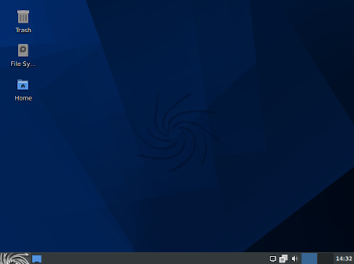

|  |
Sparky Linux!!!
SparkyLinux is a GNU/Linux distribution created on the top of Debian GNU/Linux operating system.
Sparky is fast, lightweight and fully customizable OS which offers a few versions for different users and different tasks, such as:
• fully featured OS with a lightweight desktop environment, which works out of the box and contain a selection of pré installed common use software for home users;
• 3 Special Editions for different tasks:
* GameOver for gamers (Xfce);
* Multimedia for audio, video and html pages creating (Xfce);
* Rescue for fixing broken OS or so (Openbox);
• MinimalCLI with no X server – for last, but not less important in any way, for advanced users whose want to build and configure their desktops in own way;
Sparky supports about 20 desktop environments and window managers giving you freedom of choice, having in mind that your computer is made for working, having fun, entertainment, keeping in touch with friends, and many, many other things.
For more details click here!Modica OS!!!
Why are they different?
They use it every day to produce as multimedia professionals and it is supported by a software house dedicated to the spread of Linux since 1998.
Downloading and use are completely free, like the support of the Facebook group, if you need support from the development team can be activated with a donation. It is tested every day in our PCs on 10 different hardware types. 65+ photographers use it every day in their professional studios.
They're a team of 10 independent developers who have decided to offer their free commitment to freely make available this magnificent distribution that has no equal in the Linux world.
Currently Modica OS is installed in over 12 schools and universities, 1,700+ students use it every day. You will find applications, management tools and multimedia that don't exist in any other distribution.
A Unique Configuration.
If you press alt + space bar, the launcher application menu will appear.
For more details click here!
 |
Flatcar Container Linux!!!
The Container Infrastructure OS:
Flatcar Container Linux is designed from the ground up for running container workloads. It fully embraces the container paradigm, including only what is required to run containers.
Secure by Design
Flatcar Container Linux's built-in security features, minimal design and automated updates provide a strong foundation for your infrastructure's security strategy.
Automated Updates:
With Flatcar Container Linux, you'll always be running the most stable, secure and up-to-date Flatcar version by taking advantage of the automated, atomic update feature.
Enterprise Support and more
* Standard (business hours) and Premium (24x7) support.
* Assigned customer success engineer, backed up by a global engineering team.
* Access to Kinvolk's customer portal for KB and ticket management.
For more details click here!Robo Linux 12
The Robolinux White Hat Series 12 versions available in Cinnamon, Mate & Xfce desktop flavors, were built from scratch using Ubuntu 20.04 source code. This was a rigorous seven month development cycle which provides our users with rock solid Long Term Support versions good through 2025!
The Robolinux 64 bit series 12 Cinnamon, Mate & Xfce desktop versions have built in one click video, Wifi & printer driver installation support and are powered by the Linux kernel 5.4 version in Ubuntu 20.04 that increases performance, stability, and security improvements, whilst providing support for more hardware such as the newly-announced 11th generation Intel Core processors, upcoming AMD processors & GPUs, and other peripherals. This means that all three Robolinux series 12 versions now work with even more computers and devices.
You will notice that each ultra fast and sleek series 12 desktop version has been highly optimized with small 1.2GB - 1.7GB iso download file sizes and the same modern ARC icons. Further to reduce bloat, only a minimal number of essential applications are included: Firefox, Deluge torrent client, GIMP, Shotwell, Atril PDF Viewer, Brasero, vlc, Audacious, gparted, synaptic, System cleaner, htop, a calculator, a text editor & Screenshot.
A usb drive no smaller than 2gb is recommended.
For more details click here!